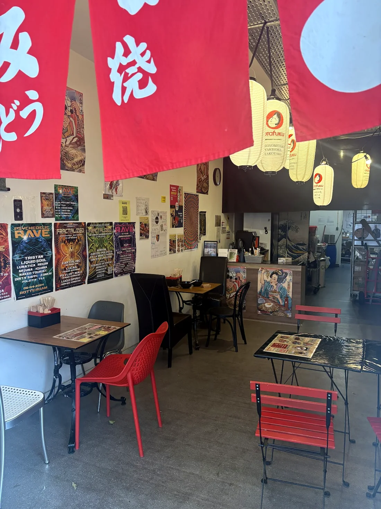
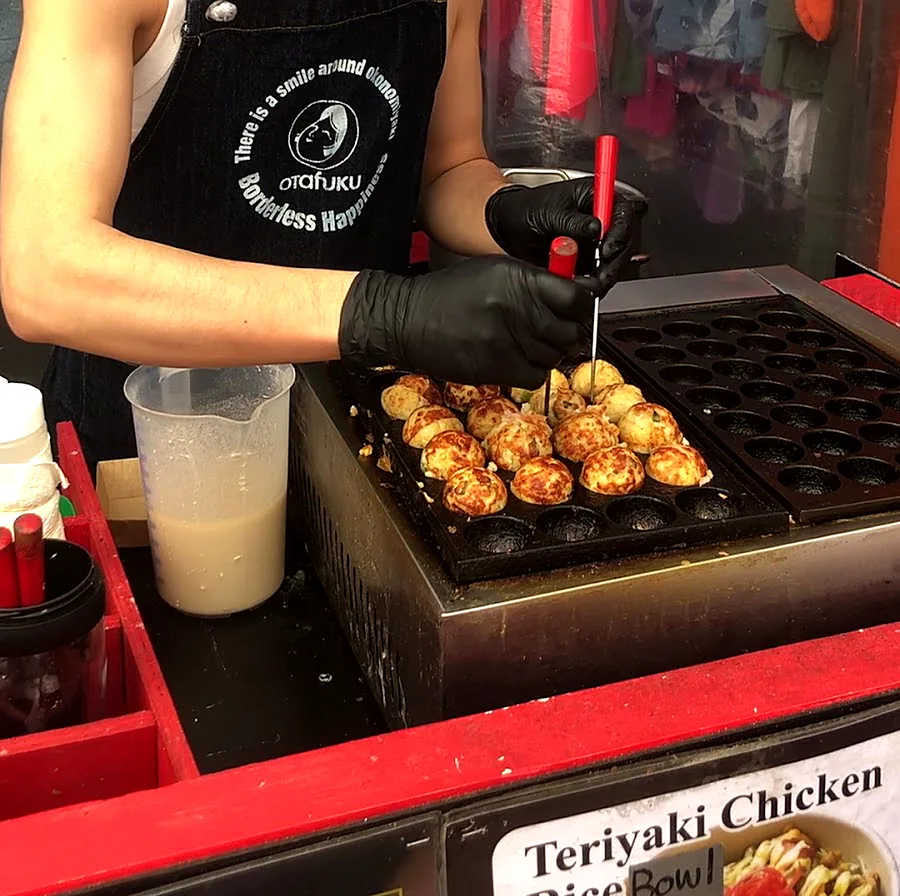
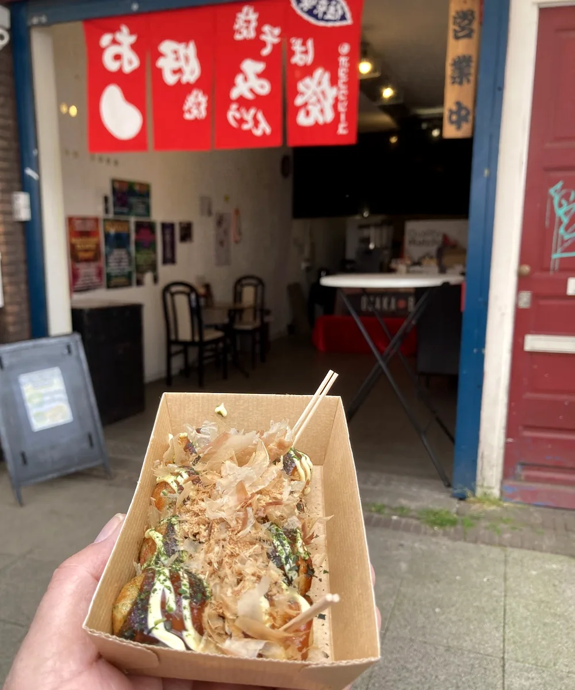
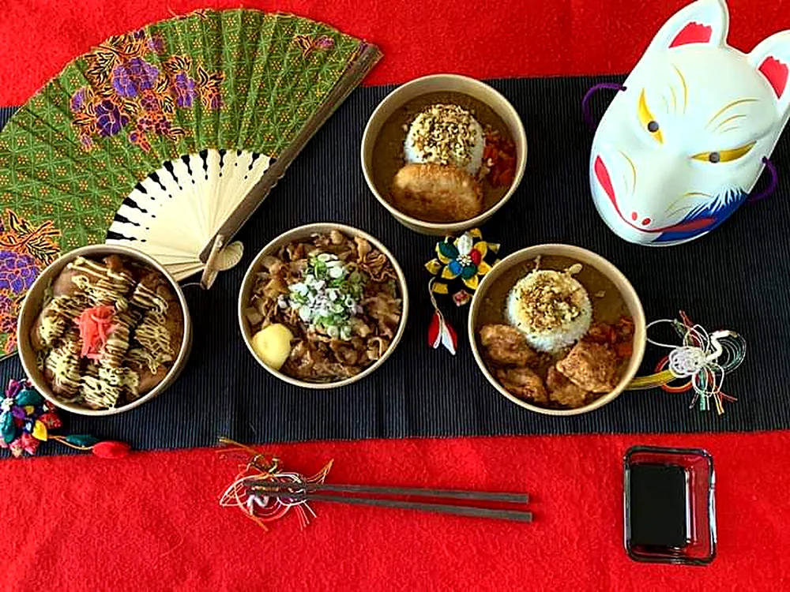

The place
A little Osaka on the Albert Cuyp
Look for the red lanterns and the wooden sign that reads 大阪ボール: Osaka ball. Out front there is a tent for a quick boat of takoyaki. Inside it is red and white, with paper lanterns, posters on the walls and tables to sit down with a bowl of ramen.
“Food & music is universal language.”From the banner above their menu

- 01
Turned by hand
The takoyaki are made at the pan right in front of you, turned ball by ball with a pick.

- 02
Tent and tables
A tent out on the street for a boat to go, and seats inside when you want to stay a while.

- 03
Halal
"Our products is Halal," says the certificate next to their menu board.
